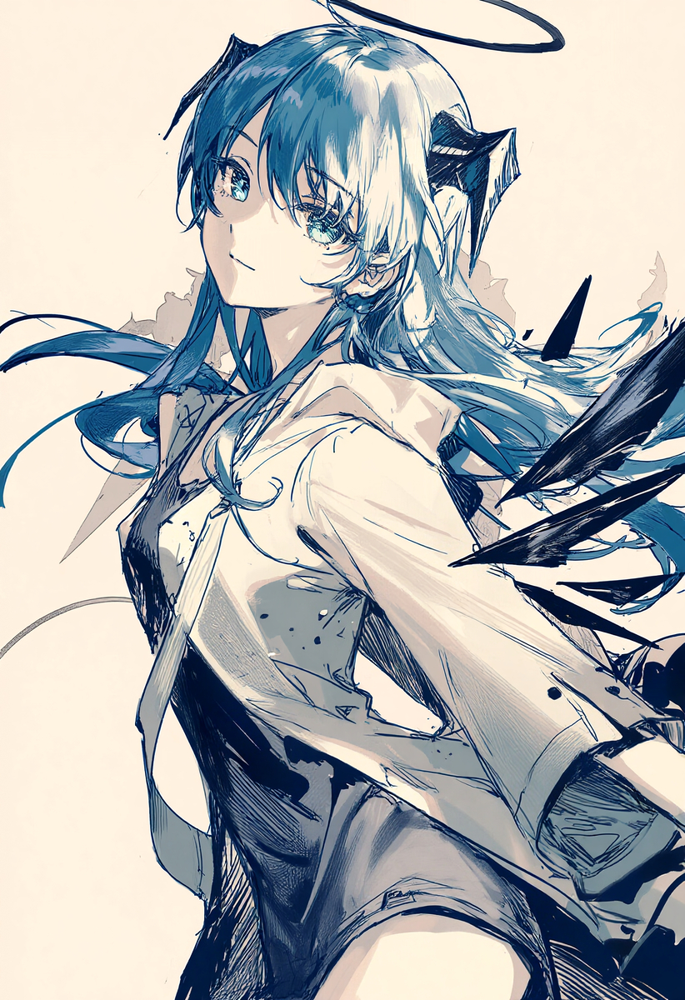

En las profundidades del sonido nocturno, Mostima opera como una entidad de frecuencias suspendidas. Se dice que sus artefactos sonoros tienen la propiedad mística de alterar la percepción del tiempo, ralentizando los beats ambientales y dilatando las texturas electrónicas hasta el infinito.
Lejos de los escenarios convencionales, su figura se mueve entre sombras y destellos celestes, dedicada a rescatar melodías perdidas y grabaciones experimentales que ninguna otra disquera se atreve a tocar. Su archivo musical es un santuario para aquellos que buscan perderse en la penumbra del IDM y el ambient profundo.
| Alias / Nombre Clave | Mostima |
|---|---|
| Edad | [ Frecuencia Desconocida ] |
| Origen Geográfico | [ Coordenadas Ocultas ] |
| Géneros Principales | Ambient Techno, IDM, Experimental, Dark Electronics |
| Instrumentos / Equipo | Sintetizadores modulares, Bastones de resonancia temporal, Cajas de ritmos análogas |
| Estado Actual | En tránsito entre dimensiones sonoras |